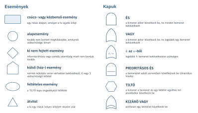
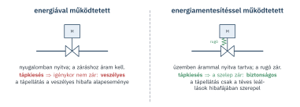
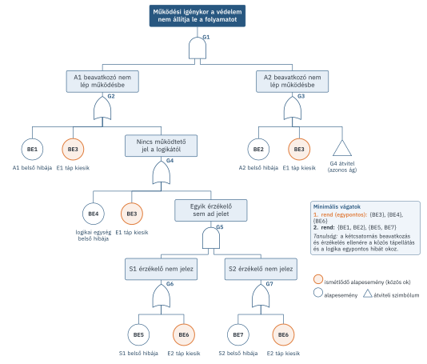
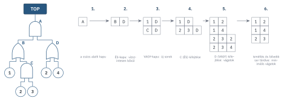
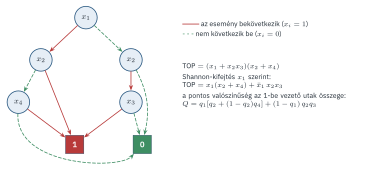
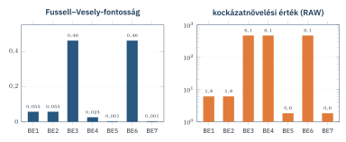
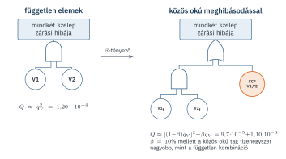
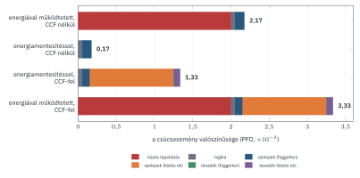

10. Hibafa-elemzés

A blokkdiagram a helyes működés útjait írja le. A biztonsági elemzésben gyakran a fordított kérdés a természetesebb: milyen meghibásodás-kombinációk vezetnek egy adott nemkívánatos eseményhez? A hibafa-elemzés (fault tree analysis, FTA) erre a kérdésre ad szisztematikus, grafikus és matematikailag pontos választ. A hibafa egy kiválasztott csúcseseményből indul ki, és logikai kapukon keresztül, lépésről lépésre bontja le azokat az okokat, amelyek együtt vagy külön-külön előidézhetik. Ebben a fejezetben megismerjük a hibafa szimbólumait és szerkesztési szabályait, a minimális vágatok meghatározását, a csúcsesemény valószínűségének kiszámítását, a fontossági mértékeket, a közös okú meghibásodások modellezését és a bizonytalanság kezelését. A ReaktorVéd példáján azt is látni fogjuk, hogy egy hibafa hogyan vezet közvetlenül jobb tervezési döntéshez.
A fejezet végére képes leszel
- egy nemkívánatos csúcseseményhez szabályosan felépíteni a hibafát;
- a minimális vágatokat a MOCUS-eljárással meghatározni, és értelmezni az egypontos hibákat;
- az alapesemények valószínűségét a meghibásodás jellegének megfelelő modellel megadni;
- a csúcsesemény valószínűségét ritkaesemény-közelítéssel, felső korláttal és bináris döntési diagrammal kiszámolni;
- a Birnbaum-, a Fussell–Vesely-, a kockázatnövelési és a kockázatcsökkentési mértéket kiszámolni és a tervezésben felhasználni;
- a közös okú meghibásodásokat β-tényezős modellel beépíteni a hibafába;
- az eredmény bizonytalanságát Monte Carlo-szimulációval becsülni, és felismerni a hibafa korlátait.
10.1. A hibafa lényege és helye a biztonsági elemzésben
A hibafa-elemzést 1961–62-ben H. A. Watson dolgozta ki a Bell Telephone Laboratories-nál, az amerikai légierő Minuteman interkontinentális rakétáinak indítóirányító rendszeréhez. A módszert a Boeing fejlesztette tovább és vitte át a repülőgép-tervezésbe, a nukleáris ipar pedig az 1970-es évek valószínűségi biztonsági elemzéseiben tette általánossá (Ericson 1999). Az Egyesült Államok Nukleáris Szabályozó Hatóságának 1981-es Fault Tree Handbook-ja (NUREG-0492) máig a szakterület alapműve (Vesely és mtsai. 1981), amelyet a NASA 2002-ben űrtechnikai alkalmazásokkal bővített ki (Stamatelatos és mtsai. 2002). A módszer nemzetközi szabványa az IEC 61025 (IEC 2006).
A hibafa deduktív, felülről lefelé haladó módszer: egy meghatározott rendszerszintű eseményből indul, és az okai felé halad. Ebben különbözik az FMEA-tól, amely induktív: az egyes elemek meghibásodási módjaiból indul, és azok következményeit követi a rendszer szintjéig (6. fejezet). A két módszer kiegészíti egymást. Az FMEA jó abban, hogy semmilyen meghibásodási mód ne maradjon ki, a hibafa pedig abban, hogy a kombinációkat, a többszörös meghibásodásokat és a közös okokat feltárja. Ezért a szabványok sokszor mindkettőt előírják. Az ISO 26262 például a hardvertervezés biztonsági elemzésére ASIL C és D esetén mind az induktív, mind a deduktív elemzést erősen ajánlja (ISO 2018), a repülésben az ARP4761A a hibafát a rendszerbiztonsági értékelés egyik alapeszközeként kezeli (SAE International 2023), a folyamatiparban pedig a biztonsági funkciók PFD-értékének ellenőrzésére is használják (13. fejezet).
A hibafa egyszerre három dolgot ad:
- Megértést: a fa felépítése közben a csapat végiggondolja, hogyan működik és hogyan hibásodhat meg a rendszer. Sok gyenge pont már a szerkesztés közben kiderül, számítás nélkül.
- Kvalitatív eredményt: a minimális vágatok megmutatják, mely meghibásodás-kombinációk okozzák a csúcseseményt, és melyek az egypontos hibák.
- Kvantitatív eredményt: ha az alapesemények valószínűsége ismert, kiszámolható a csúcsesemény valószínűsége és az egyes események hozzájárulása.
A hibafa egy kiválasztott nemkívánatos rendszerállapot (a csúcsesemény) és az azt előidéző események közötti logikai kapcsolatok grafikus modellje. Az eseményeket logikai kapuk kötik össze; a fa levelei az alapesemények, amelyeket tovább már nem bontunk, és amelyekre valószínűségi adat áll rendelkezésre.
10.2. Szimbólumok és szerkesztési szabályok
A hibafa jelölésrendszere szabványos (10.1. ábra). A leggyakoribb kapu az ÉS (a kimeneti esemény akkor következik be, ha minden bemenet bekövetkezik) és a VAGY (elég egyetlen bemenet). A k az n-ből kapu a szavazó architektúrák tömör leírása. A TILTÓ kapu egy feltételhez köti a továbbterjedést (például: a szivárgásból csak akkor lesz tűz, ha gyújtóforrás is van). A PRIORITÁSOS ÉS a sorrendfüggő viselkedést jelöli, és már a dinamikus hibafákhoz tartozik (10.9. szakasz). A házesemény biztosan bekövetkező vagy biztosan be nem következő feltétel; segítségével egyetlen fában több üzemállapot vagy tervváltozat írható le úgy, hogy a megfelelő házeseményt 0-ra vagy 1-re állítjuk.

10.2.1. A szerkesztés lépései
A hibafa-elemzés folyamata hat lépésből áll:
- A rendszer és a határok meghatározása: mi tartozik a vizsgált rendszerhez, milyen üzemállapotra és milyen külső feltételekre (például tápellátás, környezet, kezelői beavatkozás) vonatkozik az elemzés, és milyen részletezettségig bontunk.
- A csúcsesemény pontos megfogalmazása: mi történik, hol és mikor. A „a védelem meghibásodik” túl tág; a „működési igény esetén a védelem nem állítja le a betáplálást 30 másodpercen belül” már elemezhető. A csúcseseményt rendszerint a veszélyelemzés (5. fejezet) jelöli ki.
- A fa felépítése: a csúcseseménytől lefelé, minden szinten a közvetlen, szükséges és elégséges okokat keresve.
- Kvalitatív elemzés: a minimális vágatok meghatározása és értelmezése.
- Kvantitatív elemzés: a csúcsesemény valószínűsége, a fontossági mértékek és a bizonytalanság.
- Értelmezés és dokumentálás: a következtetések, a feltevések és a javasolt intézkedések rögzítése.
10.2.2. A szerkesztés szabályai
A NUREG-0492 néhány egyszerű szabályt fogalmazott meg, amelyek betartása a jó hibafák titka (Vesely és mtsai. 1981):
- Az eseményt hibaként fogalmazzuk meg: minden eseménydobozba azt írjuk, mi a hiba és mikor következik be („a szelep nem zár igénykor”, nem pedig „szelep”).
- Elemhiba vagy rendszerhiba? Ha az eseményt egyetlen elem meghibásodása okozhatja, elemállapot-hiba: alá rendszerint egy VAGY-kapu kerül a három lehetséges okkal (primer hiba: az elem a tervezési határain belül hibásodik meg; szekunder hiba: a határain kívüli igénybevétel, például túlfeszültség vagy túlmelegedés teszi tönkre; vezérlési hiba: az elem hibátlan, de rossz időben vagy rossz jelet kap). Ha nem, rendszerállapot-hiba, amelyet tovább kell bontani a közvetlen okai szerint.
- Nincs csoda: ha egy elem normális működése továbbviszi a hibát, feltételezzük, hogy normálisan működik. Nem számolunk azzal, hogy egy másik hiba „véletlenül” megállítja a folyamatot.
- Teljes kapu: egy kapu minden bemenetét definiáljuk, mielőtt bármelyiket tovább bontanánk. Így a fa szintenként épül, és nem vész el egyetlen ág sem.
- Nincs kapu–kapu kapcsolat: a kapuk bemenetei mindig megnevezett események, nem közvetlenül másik kapuk. A kapu alatti eseménydoboz kényszerít arra, hogy kimondjuk, mi történik azon a ponton.
Ezekhez a gyakorlat néhány tanácsot ad: gondolkodjunk kis lépésekben (minden szinten csak a közvetlen okot keressük, ne ugorjunk az alapeseményekhez); ugyanazt az eseményt mindenütt ugyanazzal a névvel és azonosítóval jelöljük, mert csak így ismerhetők fel az ismétlődő események; és rögzítsük a feltevéseket (például hogy a tápellátás a fa határán kívül van-e).
A ReaktorVéd biztonsági funkciójának csúcseseménye: „működési igény esetén a védelem nem állítja le a folyamatot”. Az első változatban a két gyorszáró szelep energiával működtetett: nyugalomban nyitva van, és a zárásához a mágnesszelepnek áramot kell kapnia (10.2. ábra, bal oldal). A szelepeket és a logikát az E1, a két hőmérséklet-távadót az E2 tápegység látja el.

A hibafa (10.3. ábra) csúcsa alatt ÉS-kapu áll: a funkció csak akkor marad el, ha mindkét szelep nem zár (G1). Egy szelep nem zár, ha belső hibája van, ha nincs tápellátása, vagy ha nem kap működtető jelet a logikától (G2, G3; a G4 ágat a G3 alatt átviteli szimbólum jelöli, mert ugyanaz, mint a G2 alatt). A működtető jel elmarad, ha a logika hibás, ha nincs tápellátása, vagy ha egyik érzékelő sem jelez (G5). Egy érzékelő nem jelez, ha belső hibája van, vagy ha az E2 tápegység kiesik (G6, G7).

A fa első ránézésre megnyugtató: a csúcs alatt ÉS-kapu áll, és az érzékelőket is redundánsan kötöttük be. Az ismétlődő események azonban megtörik ezt a redundanciát. A BE3 (az E1 tápegység kiesése) egyszerre mindkét szelepet megbénítja, a BE6 (az E2 kiesése) egyszerre mindkét érzékelőt. A következő szakasz ezt pontosan is megmutatja.
10.3. Kvalitatív elemzés: minimális vágatok
Vágat az alapesemények olyan halmaza, amelyek együttes bekövetkezése előidézi a csúcseseményt. Minimális vágat az a vágat, amelyből egyetlen eseményt sem hagyhatunk el úgy, hogy vágat maradjon. A minimális vágat rendje az elemeinek száma. A duális fogalom az út: az alapesemények olyan halmaza, amelyek közül egyik sem következik be, és ez biztosítja, hogy a csúcsesemény se következzen be.
A minimális vágatok a hibafa Boole-algebrai kifejezésének diszjunktív normálformáját adják: a csúcsesemény a minimális vágatok VAGY-kapcsolata, minden vágat pedig az elemeinek ÉS-kapcsolata,
\[ \mathrm{TOP} = K_1 \cup K_2 \cup \dots \cup K_m, \qquad K_j = \bigcap_{i \in K_j} B_i . \tag{10.1}\]
A minimális vágatok listája a hibafa legfontosabb kvalitatív eredménye. Az elsőrendű vágatok az egypontos hibák: egyetlen esemény elég a csúcseseményhez. Biztonsági rendszerben ezek a legsúlyosabb gyenge pontok. A magasabb rendű vágatoknál azt érdemes vizsgálni, hogy az elemeik ki vannak-e téve közös oknak: ha egy másodrendű vágat két eleme ugyanabban a helyiségben van, ugyanazt a tápot használja, ugyanaz a csapat tartja karban, vagy ugyanabból a gyártási sorozatból való, akkor a valóságban inkább elsőrendűként viselkedhet (10.6. szakasz).
10.3.1. A MOCUS-eljárás
Kis fáknál a minimális vágatok Boole-algebrai átalakítással is megkaphatók, nagyobb fáknál azonban szisztematikus eljárás kell. A klasszikus módszer a Fussell és Vesely által 1972-ben javasolt MOCUS (method for obtaining cut sets) (Fussell és Vesely 1972; Rausand és mtsai. 2020). Az eljárás egy mátrixot épít, és felülről lefelé helyettesíti a kapukat a bemeneteikkel (10.4. ábra):
- Írjuk a csúcs alatti kapu jelét a mátrix első sorába.
- Egy ÉS-kaput a bemeneteivel helyettesítünk ugyanabban a sorban, egymás mellett (a sor bővül).
- Egy VAGY-kaput úgy helyettesítünk, hogy a sort annyiszor másoljuk, ahány bemenete van, és mindegyik másolatba egy-egy bemenet kerül (a mátrix új sorokkal bővül).
- Addig folytatjuk, amíg a mátrixban csak alapesemények maradnak. Minden sor egy vágat.
- Minden sorból töröljük az ismétlődő eseményeket (\(A \cap A = A\)), majd töröljük azokat a sorokat, amelyek egy másik sort tartalmaznak (\(A \cup (A \cap B) = A\)). A megmaradó sorok a minimális vágatok.

A példafa kifejezése \(\mathrm{TOP} = (x_1 + x_2 x_3)(x_2 + x_4)\); a MOCUS-eljárás négy logikai vágatot ad: \(\{1,2\}\), \(\{1,4\}\), \(\{2,3\}\) és \(\{2,3,4\}\). Az utolsó tartalmazza a \(\{2,3\}\) vágatot, ezért nem minimális. A minimális vágatok tehát \(\{1,2\}\), \(\{1,4\}\) és \(\{2,3\}\). Érdemes megfigyelni, hogy a 2-es esemény két ágban is szerepel. Ha ezt nem vennénk észre, és a két ágat függetlennek tekintenénk, hibás eredményt kapnánk: az ismétlődő események miatt a hibafa kapunként, alulról felfelé nem számolható ki helyesen.
A 10.3. ábra hibafájára a MOCUS-eljárás öt minimális vágatot ad:
- elsőrendű (egypontos) vágatok: \(\{\mathrm{BE3}\}\) (az E1 tápegység kiesése), \(\{\mathrm{BE4}\}\) (a logika hibája), \(\{\mathrm{BE6}\}\) (az E2 tápegység kiesése);
- másodrendű vágatok: \(\{\mathrm{BE1}, \mathrm{BE2}\}\) (mindkét szelep belső hibája), \(\{\mathrm{BE5}, \mathrm{BE7}\}\) (mindkét távadó belső hibája).
A kétcsatornás beavatkozás és érzékelés ellenére tehát három egypontos hiba van. A logika egycsatornás, ezt tudatosan vállaltuk (a biztonsági PLC belső diagnosztikája nagyon jó). A két tápegység viszont rejtett egypontos hiba: a blokkdiagramon (9.3. ábra) nem is látszott, mert a blokkdiagram csak a funkció elemeit ábrázolta, a közös támogató rendszereket nem. Ez a hibafa egyik legnagyobb értéke: a közös függőségeket (tápellátás, sűrített levegő, hűtés, kommunikáció, szoftver) a fa szerkesztése szinte kikényszeríti.
10.3.2. Bináris döntési diagramok
A minimális vágatok száma nagy fáknál robbanásszerűen nőhet: egy nukleáris erőmű valószínűségi biztonsági elemzésében milliónyi vágat is előfordul, ezért a gyakorlatban csak egy valószínűségi küszöb fölötti vágatokat tartják meg. A pontos megoldás modern eszköze a bináris döntési diagram (binary decision diagram, BDD), amelyet Bryant vezetett be a logikai áramkörök ellenőrzésére (Bryant 1986), és Rauzy alkalmazott először a hibafa-elemzésben (Rauzy 1993).
A BDD a Boole-függvény Shannon-kifejtésén alapul: egy kiválasztott \(x\) változó szerint
\[ f = x \cdot f|_{x=1} + \bar{x} \cdot f|_{x=0} . \tag{10.2}\]
Ha a változókat rögzített sorrendben egymás után kifejtjük, és az azonos részfüggvényeket összevonjuk, egy irányított, körmentes gráfot kapunk, amelynek minden csúcsa egy változó, két kimenő éle pedig a változó 1, illetve 0 értékéhez tartozik (10.5. ábra). A gráf 1-es levelébe vezető utak diszjunkt eseményeket írnak le, ezért valószínűségeik egyszerűen összeadhatók, és a csúcsesemény pontos valószínűségét adják, közelítés nélkül.

A BDD mérete erősen függ a változók sorrendjétől; jó sorrenddel a legtöbb gyakorlati hibafa kezelhető méretű diagramot ad, rossz sorrenddel viszont a diagram exponenciálisan nagy lehet (Bryant 1986; Ruijters és Stoelinga 2015). A modern hibafa-eszközök ezért heurisztikákkal választják meg a sorrendet. A BDD-ből a minimális vágatok is előállíthatók, így a két megközelítés jól kiegészíti egymást.
10.4. Kvantitatív elemzés
10.4.1. Az alapesemények valószínűsége
A csúcsesemény valószínűségének kiszámításához minden alapeseményhez valószínűséget kell rendelni. Az, hogy melyik modell a helyes, a meghibásodás jellegétől és a karbantartási stratégiától függ (10.1. táblázat; a megbízhatósági alapfogalmakat a 8. fejezet tárgyalta).
| Az alapesemény jellege | Modell | Közelítés kis értékekre |
|---|---|---|
| igénykori meghibásodás (például egy relé nem húz meg) | rögzített \(q\) | – |
| nem javítható elem, \(t\) üzemidő után | \(q(t) = 1 - e^{-\lambda t}\) | \(\lambda t\) |
| azonnal feltárt, javítható meghibásodás | \(Q = \dfrac{\lambda\,\text{MTTR}}{1 + \lambda\,\text{MTTR}}\) | \(\lambda\,\text{MTTR}\) |
| rejtett meghibásodás, \(T_1\) időközű próbával | \(\bar{q} = 1 - \dfrac{1 - e^{-\lambda T_1}}{\lambda T_1}\) | \(\lambda T_1/2\) |
A biztonsági rendszerekben a legfontosabb az utolsó sor: a nyugalmi állapotban lévő védelem meghibásodása rejtve marad, amíg egy próba vagy egy valódi igény fel nem fedi. Az átlagos meghibásodási valószínűség ilyenkor a próbaidőköz felével arányos. Ha a hibát a próba után még javítani is kell, az MTTR is hozzáadódik: \(\bar{q} \approx \lambda(T_1/2 + \text{MTTR})\).
A próbaidőköz \(T_1 = 8760\) óra (évente egy próba), a javítási idő \(\text{MTTR} = 8\) óra. A szelepeknek nincs diagnosztikájuk, a rejtett veszélyes meghibásodási ráta \(\lambda_{DU} = 2{,}5\cdot10^{-6}\,\text{h}^{-1}\), így \(q_{\mathrm{BE1}} = q_{\mathrm{BE2}} = 2{,}5\cdot10^{-6}\cdot(4380 + 8) = 1{,}097\cdot10^{-2}\). A távadók diagnosztizált veszélyes hibáira a logika kiold, ezért csak a fel nem fedett rész számít: \(q_{\mathrm{BE5}} = q_{\mathrm{BE7}} = 4\cdot10^{-7}\cdot 4380 = 1{,}752\cdot10^{-3}\). A logika átlagos meghibásodási valószínűsége \(q_{\mathrm{BE4}} = 5\cdot10^{-5}\), a tápegységeké igénykor \(q_{\mathrm{BE3}} = q_{\mathrm{BE6}} = 10^{-3}\).
10.4.2. A kapuk és a csúcsesemény valószínűsége
Független bemenetek esetén az ÉS-kapu kimenetének valószínűsége a bemenetek valószínűségeinek szorzata, a VAGY-kapué a komplementerek szorzatának komplementere:
\[ Q_{\text{ÉS}} = \prod_{i=1}^{n} q_i , \qquad Q_{\text{VAGY}} = 1 - \prod_{i=1}^{n} (1 - q_i) \approx \sum_{i=1}^{n} q_i . \tag{10.3}\]
Ezek a képletek csak akkor alkalmazhatók kapuról kapura, alulról felfelé, ha a fában nincsenek ismétlődő események. Általános esetben a minimális vágatokból számolunk. A \(K_j\) vágat valószínűsége független alapeseményekkel \(Q(K_j) = \prod_{i \in K_j} q_i\), a csúcsesemény valószínűségére pedig három közelítés terjedt el:
\[ Q_{\text{ritka}} = \sum_{j=1}^{m} Q(K_j) \;\geq\; Q_{\text{MCUB}} = 1 - \prod_{j=1}^{m}\bigl(1 - Q(K_j)\bigr) \;\geq\; Q_{\text{pontos}} . \tag{10.4}\]
A ritkaesemény-közelítés egyszerűen összeadja a vágatok valószínűségét; koherens fára mindig felső korlát, és kis valószínűségeknél nagyon pontos. A minimálisvágat-felsőkorlát (minimal cut set upper bound, MCUB) úgy számol, mintha a vágatok függetlenek volnának; ez is felső korlát, és pontosabb. A pontos érték a szita-formulával (a vágatok összes metszetének előjeles összegével) vagy bináris döntési diagrammal adódik (Rausand és mtsai. 2020). A MOCUS-példánál (\(q_1 = 0{,}01\), \(q_2 = 0{,}02\), \(q_3 = 0{,}05\), \(q_4 = 0{,}1\)) a három érték 0,00220, 0,00220 és 0,00217: a különbség kevesebb, mint 1,5%.
A hibafa alapeseményei valószínűségek (dimenzió nélküli számok). Ha a csúcsesemény gyakoriság (például „tűz évente”), akkor legfeljebb egyetlen bemenet lehet gyakoriság, a többinek feltételes valószínűségnek kell lennie: \(f_{\mathrm{TOP}} = f_{\text{kezdő}} \cdot q_1 \cdot q_2 \cdots\). Két gyakoriság szorzata (1/év²) értelmetlen. Ez a hiba meglepően gyakori a gyakorlatban; a kezdő esemény gyakoriságának és a feltételes valószínűségeknek a szétválasztása az eseményfa természetes logikája (11. fejezet).
A vágatok valószínűsége és hozzájárulása a 10.2. táblázatban látható.
| Minimális vágat | Valószínűség | Hozzájárulás |
|---|---|---|
| \(\{\mathrm{BE3}\}\) – az E1 tápegység kiesése | \(1{,}000\cdot10^{-3}\) | 46,0% |
| \(\{\mathrm{BE6}\}\) – az E2 tápegység kiesése | \(1{,}000\cdot10^{-3}\) | 46,0% |
| \(\{\mathrm{BE1}, \mathrm{BE2}\}\) – mindkét szelep | \(1{,}203\cdot10^{-4}\) | 5,5% |
| \(\{\mathrm{BE4}\}\) – a logika | \(5{,}000\cdot10^{-5}\) | 2,3% |
| \(\{\mathrm{BE5}, \mathrm{BE7}\}\) – mindkét távadó | \(3{,}070\cdot10^{-6}\) | 0,1% |
| csúcsesemény (ritkaesemény-közelítés) | \(\mathbf{2{,}173\cdot10^{-3}}\) | 100% |
A ritkaesemény-közelítés \(2{,}1734\cdot10^{-3}\), a felső korlát és a pontos érték egyaránt \(2{,}1721\cdot10^{-3}\). Az eredmény egyértelmű: a kockázat 92%-át a két tápegység adja, a gondosan megtervezett szelep- és távadó-redundancia szinte nem is számít. A biztonsági funkció így a SIL 2 tartományban marad (\(10^{-3} \le \text{PFD} < 10^{-2}\)), és nem teljesíti a LOPA által megkövetelt \(\text{PFD} \le 2\cdot10^{-3}\) célt (3.4. szakasz).
A rejtett meghibásodású, együtt tesztelt redundáns elemeknél a kapuképletek csalóka eredményt adnak. Két, egyszerre tesztelt szelep együttes meghibásodási valószínűsége a próba után nulláról indul, és \((\lambda t)^2\) szerint nő. Ennek időátlaga \(\lambda^2 T_1^2/3\), nem pedig az egyedi átlagok szorzata, \((\lambda T_1/2)^2 = \lambda^2 T_1^2/4\). Az eltérés 4/3-szoros: a ReaktorVéd szelepeire \(1{,}60\cdot10^{-4}\) a helyes érték az \(1{,}20\cdot10^{-4}\) helyett. A hibafa-eszközök többsége az alapeseményekhez átlagos valószínűséget rendel, ezért ezt a hatást külön kell kezelni. Az IEC 61508-6 képletei (13. fejezet) és a Markov-modellek (12. fejezet) helyesen veszik figyelembe (IEC 2010; Rausand 2014).
10.5. Fontossági mértékek
A csúcsesemény valószínűsége egyetlen szám. A tervezőnek azonban arra van szüksége, hogy hol érdemes beavatkoznia. Erre szolgálnak a fontossági mértékek, amelyek az egyes alapesemények szerepét számszerűsítik (Borst és Schoonakker 2001; Rausand és mtsai. 2020). Jelölje \(Q\) a csúcsesemény valószínűségét, \(Q(q_i = 1)\) azt az értéket, amikor az \(i\)-edik esemény biztosan bekövetkezik, \(Q(q_i = 0)\) pedig azt, amikor biztosan nem.
- Birnbaum-fontosság (Birnbaum 1969): \(I^{B}_i = \partial Q / \partial q_i = Q(q_i = 1) - Q(q_i = 0)\). Annak a valószínűsége, hogy a rendszer olyan állapotban van, amelyben az \(i\)-edik esemény kritikus, vagyis az ő bekövetkezése dönti el a csúcseseményt. Az esemény saját valószínűségétől nem függ.
- Fussell–Vesely-fontosság (Fussell 1975): \(I^{FV}_i = Q(\text{az } i \text{-t tartalmazó vágatok}) / Q\). A csúcsesemény valószínűségének az a hányada, amelyhez az \(i\)-edik esemény hozzájárul. Ez a „hova folyik a kockázat” kérdésre felel.
- Kockázatnövelési érték (risk achievement worth, RAW): \(\text{RAW}_i = Q(q_i = 1)/Q\). Hányszorosára nő a kockázat, ha az elem biztosan meghibásodott (például karbantartás miatt kiiktatták). A megtartandó teljesítmény mértéke.
- Kockázatcsökkentési érték (risk reduction worth, RRW): \(\text{RRW}_i = Q/Q(q_i = 0)\). Hányadára csökkenne a kockázat, ha az elem tökéletes volna. A fejlesztési lehetőség felső korlátja.
A 10.3. táblázat és a 10.6. ábra a ReaktorVéd energiával működtetett változatának fontossági mértékeit mutatja.
| Esemény | Birnbaum | Fussell–Vesely | RAW | RRW |
|---|---|---|---|---|
| BE1, BE2 – szelep belső hibája | \(1{,}10\cdot10^{-2}\) | 0,055 | 6,0 | 1,06 |
| BE3, BE6 – tápegység kiesése | 0,999 | 0,460 | 460 | 1,85 |
| BE4 – logika | 0,998 | 0,023 | 460 | 1,02 |
| BE5, BE7 – távadó belső hibája | \(1{,}75\cdot10^{-3}\) | 0,001 | 1,8 | 1,00 |

A számok három tanulságot hordoznak. Először: a tápegységek Fussell–Vesely-fontossága 0,46, RRW-je 1,85, vagyis egyetlen tápegység tökéletessé tétele majdnem felére csökkentené a kockázatot. Másodszor: a logika és a tápegységek RAW-értéke 460, vagyis ha bármelyikük kiesik, a funkció biztosan nem működik; ezeket tehát karbantartás alatt sem szabad pótlólagos védelem nélkül kiiktatni. Harmadszor: a szelep Birnbaum-fontossága pontosan a másik szelep meghibásodási valószínűsége, mert egy szelep csak akkor kritikus, ha a másik már nem zár. A szelepek fejlesztése ezért ebben a változatban alig hozna eredményt.
10.6. Közös okú meghibásodások a hibafában
A redundancia csak akkor hatékony, ha a csatornák egymástól függetlenül hibásodnak meg. A valóságban a redundáns elemek gyakran ugyanazt a környezeti igénybevételt kapják, ugyanabból a gyártási sorozatból származnak, ugyanaz a csapat tartja karban őket, és ugyanaz a tervezési hiba lehet bennük. A közös okú meghibásodás (common cause failure, CCF) több elem egyidejű vagy közel egyidejű meghibásodása egyetlen közös ok miatt (Mosleh és mtsai. 1988). A ReaktorVéd tápegységei a CCF explicit esetét mutatták: a közös függőséget a fában külön eseményként ábrázoltuk. A rejtett, nem modellezett közös okokat paraméteres modellekkel kezeljük.
A legegyszerűbb a β-tényezős modell: az elem meghibásodási rátáját egy független és egy közös okú részre bontjuk,
\[ \lambda = \lambda_{\text{f}} + \lambda_{\text{CCF}}, \qquad \lambda_{\text{CCF}} = \beta\lambda, \qquad \lambda_{\text{f}} = (1-\beta)\lambda , \tag{10.5}\]
ahol a közös okú rész a csoport minden elemét egyszerre éri. A hibafában ezt úgy építjük be, hogy minden elem eseményét egy VAGY-kapura cseréljük, amelynek egyik bemenete az elem független meghibásodása, a másik a csoport közös okú eseménye (10.7. ábra). A közös okú esemény így ismétlődő eseményként minden érintett ágban megjelenik, és a minimális vágatok között elsőrendű vágatként tűnik fel.

A β értékét az IEC 61508-6 D melléklete egy pontozásos eljárással adja meg, amely a szétválasztást, a diverzitást, a tervezési érettséget, az elemzéseket, a karbantartási eljárásokat, a képzést és a környezeti feltételeket értékeli; az eredmény a logikai egységekre 0,5–5%, az érzékelőkre és a beavatkozókra 1–10% (IEC 2010). A finomabb modellek (az α-tényezős modell vagy a PDS-módszer \(C_{MooN}\)-tényezői) a különböző rendű közös okú eseményeket is megkülönböztetik, ami 2oo3 és nagyobb redundanciánál fontos (Mosleh és mtsai. 1988; Hauge és mtsai. 2013).
A fontossági mértékek alapján a tervezőcsapat két változtatást hajt végre: a szelepeket energiamentesítéssel működtetett (hibabiztos) kivitelre cseréli, amelyeket üzemben áram tart nyitva, és tápkiesésnél a rugó zárja (10.2. ábra, jobb oldal); a távadókat pedig áramhurkos, „élő nulla” jelzésű kivitelben köti be, így a táp- vagy vezetékhiba kioldást okoz. A tápegységek ezzel kikerülnek a veszélyes hibafából: kiesésük téves leállást okoz, és a téves leállások hibafájában jelennek meg.
Ha a közös okú meghibásodásokat figyelmen kívül hagyjuk, az új hibafa csúcseseménye \(1{,}73\cdot10^{-4}\), ugyanannyi, mint a blokkdiagram eredménye (9. fejezet). Ez azonban túl szép, hogy igaz legyen. A szelepekre \(\beta = 10\%\), a távadókra \(\beta = 5\%\) értéket feltételezve a β-tényezős hibafa öt minimális vágatot ad: a szelepek közös okú hibája (\(1{,}097\cdot10^{-3}\)), a szelepek független hibáinak párja (\(9{,}75\cdot10^{-5}\)), a távadók közös okú hibája (\(8{,}76\cdot10^{-5}\)), a logika (\(5{,}0\cdot10^{-5}\)) és a távadók független hibáinak párja (\(2{,}77\cdot10^{-6}\)). A csúcsesemény \(1{,}335\cdot10^{-3}\).

A 10.8. ábra négy változatot vet össze. Ha az eredeti, energiával működtetett változatban is figyelembe vesszük a közös okokat, a csúcsesemény \(3{,}33\cdot10^{-3}\), vagyis a hibabiztos átalakítás valójában két és félszeres javulást hozott, nem tizenkétszerest. A következő lépés már nem a tápellátásról szól: a kockázatot most a szelepek közös okú meghibásodása uralja. Ezt a 13. fejezet részleges löketpróbával (partial stroke testing) csökkenti. A hibafa eredménye (\(1{,}335\cdot10^{-3}\)) jól egyezik az IEC 61508-6 képleteivel kapott \(1{,}37\cdot10^{-3}\) értékkel; a kis eltérés a független páros meghibásodások időátlagolásából (a 4/3-os tényezőből) adódik.
10.7. Bizonytalanság és érzékenység
A csúcsesemény valószínűsége pontosan annyira megbízható, amennyire az alapesemények adatai. Az alapadatok forrásai (gyártói adatok, adatbázisok, üzemi tapasztalat, szakértői becslés) gyakran egy nagyságrendnyi vagy még nagyobb bizonytalanságot hordoznak (8. fejezet). A hibafa-elemzésnek ezért három kiegészítő vizsgálata van.
Érzékenységvizsgálat: egy paramétert (például a próbaidőközt) változtatunk, és figyeljük a csúcsesemény változását. A ReaktorVéd energiával működtetett változatában a próbaidőköz felezése (\(T_1 = 4380\) óra) a csúcseseményt csak \(2{,}173\cdot10^{-3}\)-ról \(2{,}081\cdot10^{-3}\)-ra, alig 4%-kal csökkenti, mert a próba a tápegységek hibáin nem segít. A hibabiztos, közös okokat is figyelembe vevő változatban ugyanez a lépés \(1{,}335\cdot10^{-3}\)-ról \(6{,}68\cdot10^{-4}\)-re, a felére csökkenti a csúcseseményt. Ugyanaz az intézkedés tehát az egyik tervben hatástalan, a másikban hatékony; ezt csak a teljes modell mutatja meg.
Bizonytalanságterjedés: az alapesemények valószínűségét eloszlással írjuk le, és Monte Carlo-szimulációval kiszámoljuk a csúcsesemény eloszlását. A valószínűségi biztonsági elemzésekben elterjedt a lognormális eloszlás, amelyet a mediánnal és a hibatényezővel (error factor, EF) adunk meg: \(\text{EF} = q_{95}/q_{50} = q_{50}/q_{05}\), így a 90%-os intervallum \([q_{50}/\text{EF},\; q_{50}\cdot\text{EF}]\) (Modarres és mtsai. 2016). Ha a szakértő csak egy tartományt ad meg (például „0,01 és 0,1 között”), lognormális feltevés mellett a természetes középérték a mértani közép (\(\sqrt{0{,}01\cdot0{,}1} = 0{,}0316\)), nem a számtani (0,055).
A modell bizonytalansága: a legnehezebb kérdés az, hogy a fa teljes-e, és helyesek-e a feltevései (függetlenség, kétállapotú elemek, a határok). Erre nincs képlet; a független átvizsgálás, a tapasztalt elemzők és az üzemi tapasztalattal való összevetés segít.
Tegyük fel, hogy az energiával működtetett változat minden alapeseményének valószínűsége lognormális eloszlású, mediánja a pontbecslés, hibatényezője \(\text{EF} = 3\) (azaz \(\sigma = \ln 3/1{,}645 = 0{,}668\)). Kétszázezer mintából a csúcsesemény eloszlása:
- medián: \(2{,}47\cdot10^{-3}\), átlag: \(2{,}75\cdot10^{-3}\);
- 90%-os intervallum: \(1{,}20\cdot10^{-3}\) és \(5{,}28\cdot10^{-3}\) között.
Két dolog figyelemre méltó. Az átlag nagyobb a pontbecslésnél (\(2{,}17\cdot10^{-3}\)), mert a lognormális eloszlás jobbra ferde: ha a pontbecsléseket mediánként értelmezzük, a csúcsesemény várható értéke magasabb a pontbecslésből számolt értéknél. Másrészt már a medián is meghaladja a LOPA által megkövetelt \(2\cdot10^{-3}\)-os célt, a 95%-os percentilis pedig annak két és félszerese. A bizonytalanság figyelembevétele tehát még erősebben alátámasztja, hogy ez a változat nem fogadható el.
10.8. A sikerfa és a hibafa kapcsolata
Minden hibafának van duális párja, a sikerfa, amely a csúcsesemény be nem következését írja le. A sikerfát úgy kapjuk, hogy minden eseményt a komplementerére cserélünk, az ÉS-kapukat VAGY-kapura és fordítva (De Morgan-azonosságok). A sikerfa minimális vágatai a hibafa minimális útjai: azok az elemhalmazok, amelyek hibátlan működése garantálja a funkciót. A ReaktorVéd hibabiztos változatában (közös okok nélkül) egy minimális út például: {TT1 működik, logika működik, V1 zár}. A minimális utak pontosan a megbízhatósági blokkdiagram útjai, vagyis a hibafa, a sikerfa és a blokkdiagram ugyanannak a struktúrafüggvénynek három nézete (9.1.1. szakasz). A hibafa előnye, hogy a meghibásodások okait is ábrázolja (tápellátás, vezérlési hibák, közös okok), és nem csak a funkció elemeit.
10.9. Dinamikus hibafák
A klasszikus (statikus) hibafa nem tud különbséget tenni aközött, hogy két esemény milyen sorrendben következik be. Sok rendszerben azonban éppen a sorrend számít: egy hideg tartalék csak akkor kapcsolódik be, ha a fő egység már kiesett; egy átkapcsoló csak akkor okoz bajt, ha előbb hibásodik meg, mint a fő egység; egy közös hálózati kapcsoló kiesése funkcionálisan magával rántja a tőle függő elemeket. Ezek kezelésére Dugan és munkatársai 1992-ben vezették be a dinamikus hibafát új kapukkal (Dugan és mtsai. 1992): prioritásos ÉS (PAND), tartalék (SPARE, hideg, meleg és forró tartalékkal), funkcionális függőség (FDEP) és kényszerített sorrend (SEQ).
A dinamikus hibafa már nem oldható meg Boole-algebrával: a dinamikus részfákat Markov-láncra (12. fejezet), stochasztikus Petri-hálóra vagy szimulációra kell visszavezetni, a statikus részeket pedig továbbra is BDD-vel lehet számolni (Ruijters és Stoelinga 2015). A gyakorlatban érdemes a fát modulokra bontani, és csak ott használni dinamikus kapukat, ahol a sorrend valóban számít.
A vészfékező asszisztensnek legalább két hibafára van szüksége (5. fejezet). Az egyik csúcsesemény az indokolatlan erős fékezés (amely hátulról ütközést okozhat), a másik a fékezés elmaradása veszélyes helyzetben. A két fa ellentétes irányba húz. Ha az érzékelést két független csatornára (radar és kamera) építjük, és bármelyik csatorna jelzésére fékezünk (1oo2), a fékezés elmaradásának fája két független csatorna egyidejű hibáját igényli, az indokolatlan fékezés fája viszont bármelyik csatorna téves jelzésétől bekövetkezik. Ha mindkét csatorna egyetértése kell (2oo2), a helyzet fordított. A két fa együttes elemzése mutatja meg, hogy a döntési logika és a csatornák diagnosztikája hogyan hangolható össze. Az ISO 26262 szerint ezek a hibafák a véletlen hardverhibák és a rendszerszintű hibák elemzésére valók; ha a fékezés azért marad el, mert a köd korlátozza az érzékelést, és semmi sem hibásodott meg, az a rendeltetésszerű funkció biztonságának (ISO 21448) tárgya (18. fejezet).
10.10. Erősségek és korlátok
Előnyök: a hibafa egy konkrét, súlyos nemkívánatos eseményre összpontosít; feltárja a többszörös meghibásodásokat, a közös függőségeket és az egypontos hibákat; ötvözi a hardvert, a szoftvert, az emberi hibát és a külső eseményeket; szemléletes, ezért a tervezők és a döntéshozók közötti kommunikációt is segíti; kvantitatív eredménye a biztonsági követelmények igazolására is alkalmas; a fontossági mértékek pedig közvetlenül megmutatják, hol a leghatékonyabb a beavatkozás.
Korlátok: a hibafa csak azokat az okokat tartalmazza, amelyekre az elemzők gondoltak, ezért teljessége sosem garantált; minden csúcseseményhez külön fa kell; a statikus fa nem ábrázolja a sorrendet és az időbeli viselkedést; a kétállapotú elemek feltevése a fokozatos leromlást nem írja le; a függetlenségi feltevés sérülését (közös okok) külön kell modellezni; a kvantitatív eredmény érzékeny a gyakran bizonytalan alapadatokra; nagy rendszereknél a fa mérete és a vágatok száma kezelhetetlenné válhat. A komplex, szoftverintenzív rendszerekben, ahol a balesetek gyakran hibátlan elemek nem szándékolt kölcsönhatásából fakadnak, a hibafát rendszerelméleti módszerekkel (STPA, 7. fejezet) érdemes kiegészíteni.
A gyakorlati útmutató 8. laborjában egy böngészős hibafa-szerkesztővel építheted fel a ReaktorVéd hibafáját; az alkalmazás kiszámolja a minimális vágatokat, a csúcsesemény valószínűségét és a fontossági mértékeket, és a házeseményekkel válthatsz az energiával és az energiamentesítéssel működtetett változat között. A hozzá tartozó Colab-notebook a MOCUS-eljárást és a bináris döntési diagramot is lépésenként megvalósítja, és Monte Carlo-szimulációval elvégzi a bizonytalanságelemzést.
- A hibafa deduktív módszer: egy pontosan megfogalmazott csúcseseményből indul, és logikai kapukon át bontja le az okait az alapeseményekig.
- A jó hibafa szabályai: hibaként megfogalmazott események, elem- és rendszerhibák megkülönböztetése, „nincs csoda”, teljes kapuk, nincs kapu–kapu kapcsolat; az ismétlődő események következetes jelölése.
- A minimális vágatok a csúcsesemény diszjunktív normálformáját adják; az elsőrendű vágatok az egypontos hibák. A MOCUS-eljárás és a bináris döntési diagram a két fő megoldási módszer.
- Az alapesemények modellje a meghibásodás jellegétől függ; rejtett, időszakosan tesztelt meghibásodásnál az átlagos valószínűség \(\lambda T_1/2\).
- A csúcsesemény valószínűsége ritkaesemény-közelítéssel, felső korláttal vagy pontosan (BDD) számolható; koherens fára a két közelítés felső korlát.
- A fontossági mértékek közül a Fussell–Vesely a kockázat megoszlását, a RAW a megtartandó, az RRW a fejleszthető teljesítményt mutatja.
- A közös okú meghibásodások β-tényezős modellel elsőrendű vágatként épülnek be; a redundáns rendszerekben gyakran ezek uralják az eredményt.
- A ReaktorVéd példája szerint a hibabiztos kialakítás megszüntette a tápegységek egypontos hibáját, a kockázatot ezután a szelepek közös okú meghibásodása uralja.
- Miért nem jó csúcsesemény az, hogy „a hűtőrendszer meghibásodik”? Fogalmazd meg pontosabban!
- Egy hibafa csúcsa alatt ÉS-kapu áll, két bemenete \(A + B\) és \(A + C\). Melyek a minimális vágatok? Mekkora a csúcsesemény valószínűsége, ha \(q_A = 10^{-3}\), \(q_B = q_C = 10^{-2}\), és mekkora lenne, ha az \(A\) ismétlődését figyelmen kívül hagynánk?
- Egy alapesemény rejtett meghibásodás, \(\lambda = 2\cdot10^{-6}\,\text{h}^{-1}\), a próbaidőköz fél év. Mekkora az átlagos meghibásodási valószínűsége? Hogyan változik, ha a javítás átlagosan 24 óráig tart?
- Miért lehet egy alapesemény Birnbaum-fontossága nagy, a Fussell–Vesely-fontossága mégis kicsi? Mondj rá példát a ReaktorVéd hibafájából!
- Két redundáns szivattyú meghibásodási valószínűsége igénykor egyenként \(q = 0{,}02\), és \(\beta = 5\%\). Számold ki az együttes meghibásodás valószínűségét a közös okok figyelembevételével és anélkül!
- Miért nő a ReaktorVéd energiával működtetett változatában alig a biztonság, ha a próbaidőközt felezzük?
Megoldás
- Nem mondja meg, mit jelent a meghibásodás, hol és mikor következik be. Pontosabban: „normál üzemben a reaktor hőelvonása 10 percen belül a tervezett érték 50%-a alá csökken”, vagy „igény esetén a tartalékhűtés 60 másodpercen belül nem indul el”.
- \(\mathrm{TOP} = (A + B)(A + C) = A + AC + AB + BC = A + BC\). A minimális vágatok: \(\{A\}\) és \(\{B, C\}\). \(Q \approx 10^{-3} + 10^{-4} = 1{,}1\cdot10^{-3}\). Ha az \(A\) ismétlődését figyelmen kívül hagynánk, és a két VAGY-kaput függetlennek tekintenénk: \((1{,}1\cdot10^{-2})^2 \approx 1{,}21\cdot10^{-4}\), ami majdnem egy nagyságrenddel alábecsülné a kockázatot.
- \(\bar{q} \approx \lambda T_1/2 = 2\cdot10^{-6}\cdot 4380/2 = 4{,}38\cdot10^{-3}\). A javítással \(\bar{q} \approx \lambda(T_1/2 + \text{MTTR}) = 2\cdot10^{-6}\cdot(2190 + 24) = 4{,}43\cdot10^{-3}\); a hatás csekély.
- A Birnbaum-fontosság azt méri, mennyire kritikus az elem, ha meghibásodik; a saját valószínűségétől nem függ. A Fussell–Vesely-fontosság a tényleges hozzájárulást méri, amelyben az elem valószínűsége is benne van. A logika (BE4) Birnbaum-fontossága 0,998 (bekövetkezése szinte biztosan csúcseseményt okoz), de mivel nagyon megbízható (\(q = 5\cdot10^{-5}\)), Fussell–Vesely-fontossága csak 0,023.
- Közös okok nélkül \(q^2 = 4\cdot10^{-4}\). A β-tényezős modellel \([(1-\beta)q]^2 + \beta q = (0{,}019)^2 + 0{,}001 = 3{,}61\cdot10^{-4} + 10^{-3} = 1{,}36\cdot10^{-3}\), vagyis több mint háromszoros.
- Mert a kockázat 92%-át a tápegységek igénykori kiesése adja, amelyre a próbaidőköz nem hat. A próba csak a szelepek és a távadók rejtett hibáit fedi fel, azok pedig együtt is csak a kockázat kis részét adják. Előbb a domináns vágatokat kell megszüntetni.
- Vesely, W. E. et al. (1981): Fault Tree Handbook (NUREG-0492). U.S. NRC – a szerkesztési szabályok és a klasszikus elmélet alapműve (Vesely és mtsai. 1981).
- Stamatelatos, M. et al. (2002): Fault Tree Handbook with Aerospace Applications. NASA – korszerű, gyakorlati kézikönyv, dinamikus kapukkal (Stamatelatos és mtsai. 2002).
- IEC 61025:2006 – a hibafa-elemzés nemzetközi szabványa (IEC 2006).
- Rausand, M., Barros, A., Høyland, A. (2020): System Reliability Theory, 4. és 6. fejezet – hibafák, minimális vágatok, fontossági mértékek (Rausand és mtsai. 2020).
- Ruijters, E., Stoelinga, M. (2015): Fault tree analysis: A survey of the state-of-the-art. Computer Science Review – a statikus és dinamikus hibafák modern módszereinek áttekintése (Ruijters és Stoelinga 2015).
- Mosleh, A. et al. (1988): Procedures for Treating Common Cause Failures in Safety and Reliability Studies (NUREG/CR-4780) (Mosleh és mtsai. 1988).